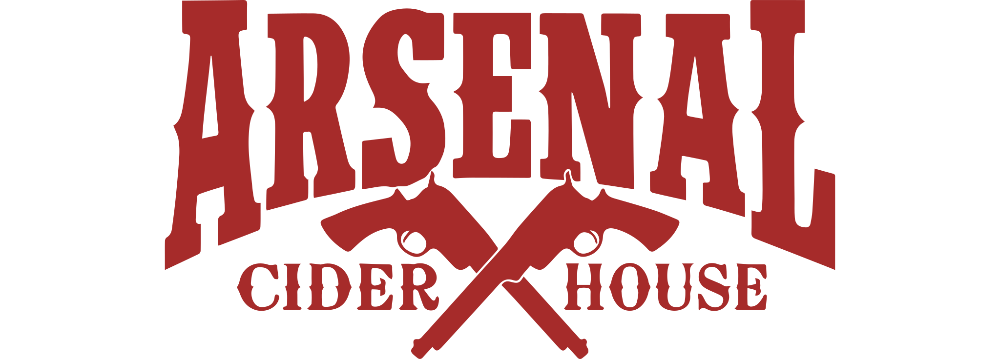
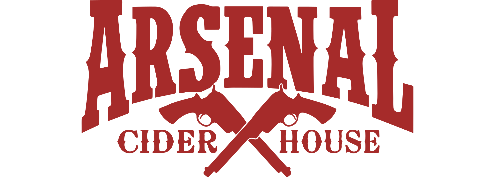
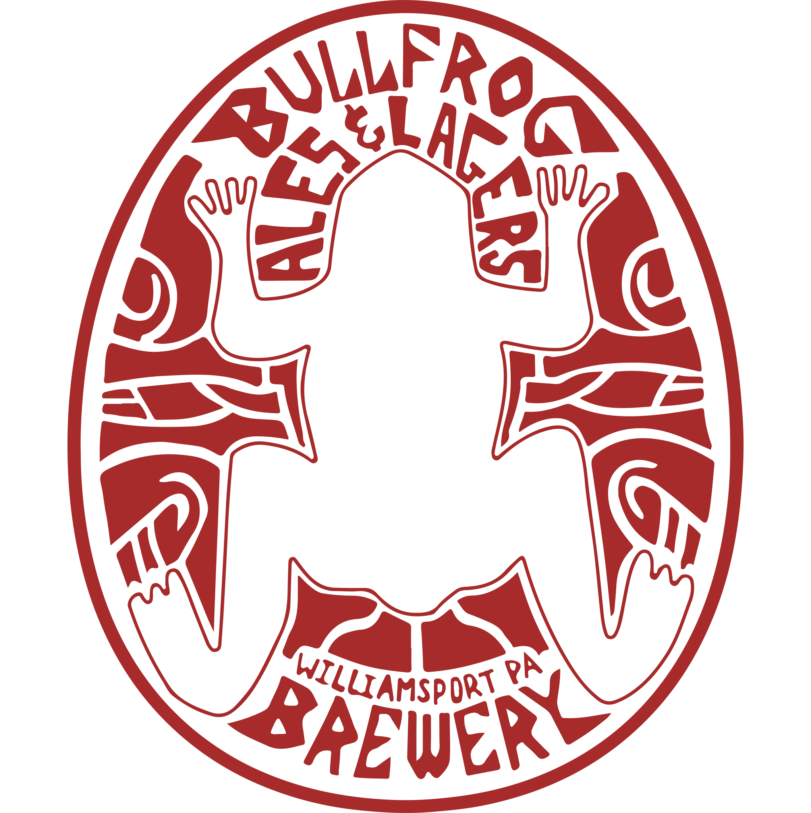
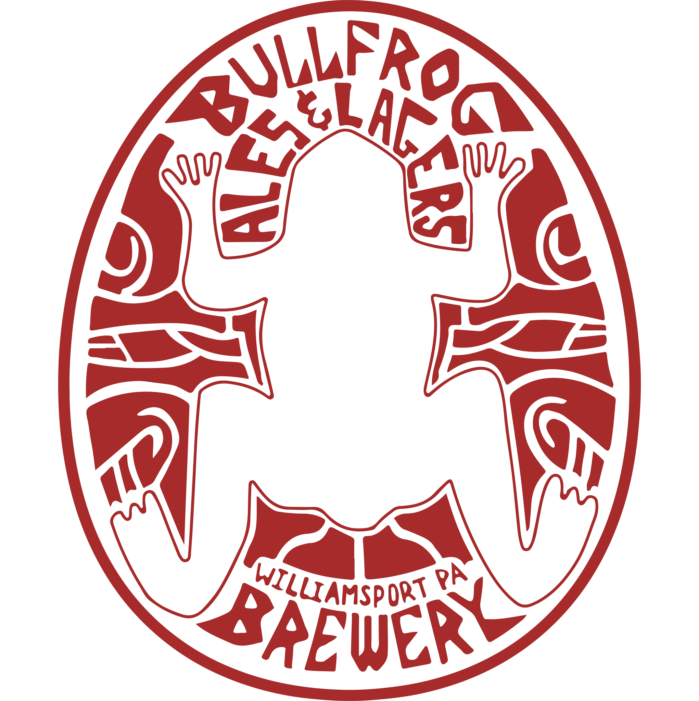

Crawford County
12005 Conneaut Lake Rd, Conneaut Lake, PA 16316
Adams County
1865 Gettysburg Village Dr, Gettysburg, PA 17325
1863 Gettysburg Village Dr #420, Gettysburg, PA 17325

Allegheny County | Butler County | Washington County
101 Beverly Road, Mt. Lebanon, PA 15216
20111 Route 19, Cranberry Township, PA 16066
2200 Tanger Boulevard Suite 875, Washington, PA 15301


 



 
